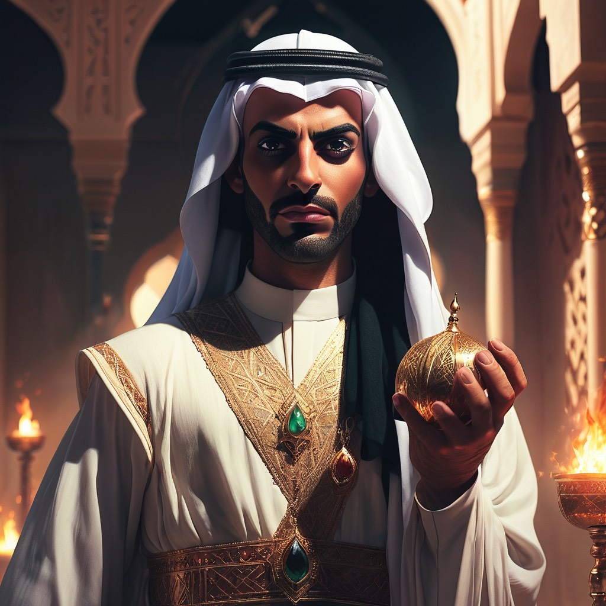

Outcast Libyan
Farouk Al-Mansouri was born into a life of privilege and luxury, surrounded by opulence and wealth. As a member of the Libyan aristocracy, he had access to all the trappings of high society. However, beneath the glamorous facade, Farouk was involved in a web of corruption that would eventually lead to his downfall. For years, Farouk had been using his position to embezzle funds and engage in illicit activities, all while maintaining a polished public image. His schemes were carefully hidden, with layers of deception to protect his true intentions. However, as the saying goes, "The truth always finds a way to come out." A group of investigative journalists, determined to expose corruption within the Libyan government, stumbled upon evidence that led them straight to Farouk's door. Through their relentless pursuit of the truth, they uncovered a vast network of bribery, money laundering, and embezzlement that implicated Farouk and several high-ranking officials. The revelation sent shockwaves through the country, sparking public outrage and demands for justice. The evidence against Farouk was overwhelming, leaving him with no choice but to face the consequences of his actions. The court proceedings were highly publicized, capturing the attention of the nation and the international community. Farouk, once revered as a symbol of power and influence, now stood before the court, stripped of his title and reputation. The trial was a spectacle, with witnesses testifying against him and presenting damning evidence. The weight of his crimes hung heavy in the air, and it became clear that his fate was sealed. In a dramatic turn of events, the court found Farouk guilty of corruption and sentenced him to exile. Stripped of his wealth and connections, he was banished from his homeland, forced to confront the consequences of his actions in a foreign land. Exile proved to be a humbling experience for Farouk. Cut off from his lavish lifestyle and surrounded by unfamiliar faces, he had no choice but to reflect on the choices he had made. The once-arrogant aristocrat began to question the meaning of true wealth and power, realizing that it was not measured by material possessions, but by integrity and the impact one had on others.

Outcast Libyan
Tragedy · 1 year ago